Mikrocomputertechnik 1
Einheit 2: RISC-V-Registerbefehle und Venus
Vom Baustein zum Programm
- Vorwissen: 32-Bit-Wort, Zweierkomplement, Register, ALU
- Heute: Befehle lesen, Zustände verfolgen, Wörter codieren
- Arbeitsweise: vorhersagen → ausführen → vergleichen
Was Sie anschließend können
- Registerbefehle mit konkreten Anfangswerten erklären
- Immediate-Grenzen und Shiftweiten prüfen
- Ein R- und ein I-Format von Hand codieren und decodieren
- Ein vollständiges Venus-Programm schrittweise prüfen
1. Das vereinbarte Maschinenmodell
ISA und Mikroarchitektur
- ISA: sichtbare Register und definierte Befehlswirkung
- Mikroarchitektur: Datenpfad, Steuerwerk, konkrete Ausführung
- Ein Simulator-Step ist keine Messung eines Hardwaretakts.
RISC-V: regelmäßig und erweiterbar
- RISC: einfache, gut kombinierbare Befehlsformen
- RISC-V ist eine offene ISA; ein konkreter Kern kann proprietär sein.
- RV32I: 32-Bit-Integerbasis
- Erweiterung M: Multiplikation/Division; C: komprimierte Befehle
Unser RV32I-Ausschnitt
- 32 Architekturregister:
x0bisx31, jeweils 32 Bit x0liefert immer null und verwirft Schreibversuche.- Byteadressierung; native Instruktionen hier 4 Byte lang
- Rechnen in Registern, Speicherzugriffe durch eigene Befehle
2. Register und Befehlszeilen
Ziel links, Quellen rechts
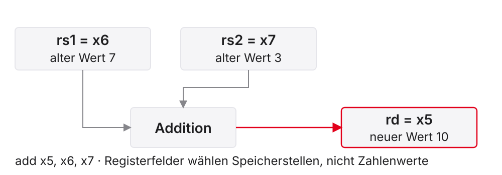
Ein Register, zwei Namen
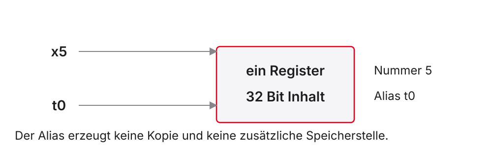
Registerrollen: die nötige Orientierung
| Namen | Nummern | Softwarevereinbarung |
|---|---|---|
zero |
x0 |
immer null |
t0–t6 |
x5–x7, x28–x31 |
temporäre Werte |
s0–s11 |
x8–x9, x18–x27 |
bei Funktionsrückkehr erhalten |
a0–a7 |
x10–x17 |
Argumente, a0 auch skalares Ergebnis |
Die ABI ist eine Softwarevereinbarung; Aufrufe folgen in Einheit 4.
Eine Zustandsänderung von Hand
Anfang: t0 = 7, t1 = 3.
Welche Werte stehen nach jeder Zeile in t0, t1 und x0?
Der PC ist eine Adresse
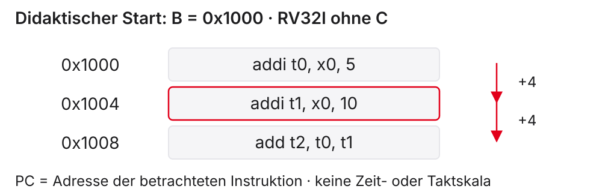
- Bei geradliniger Ausführung: \(\mathrm{PC}_{\text{nach}}=\mathrm{PC}_{\text{vor}}+4\)
- Labels und Kommentare belegen keine Instruktionsplätze.
3. Mit Registerwerten rechnen
Addition: die unteren 32 Bit bleiben
\[R_{\text{neu}}=(A+B)\bmod 2^{32}\]
| Quellen | Ergebniswort | Interpretation |
|---|---|---|
5 und 10 |
0x0000000F |
15 |
0xFFFFFFFF und 1 |
0x00000000 |
Umlauf |
0x7FFFFFFF und 1 |
0x80000000 |
signed: \(-2^{31}\) |
add löst bei signed Überlauf keinen Überlauf-Trap aus.
Subtraktion: Reihenfolge beachten
\[R_{\text{neu}}=(A-B)\bmod 2^{32}\]
t2 = 0x00000004, t3 = 0xFFFFFFFC.
Eine Gleichung braucht Zwischenergebnisse
\[Y=(A+B)-(C+D),\quad A=5,\ B=10,\ C=3,\ D=2\]
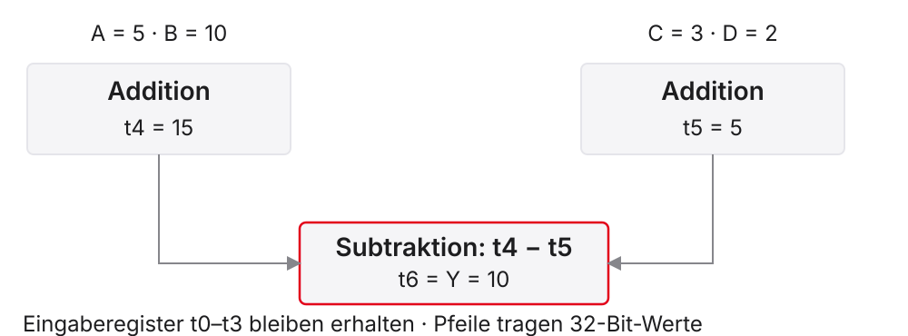
Bitweise Logik arbeitet stellenweise
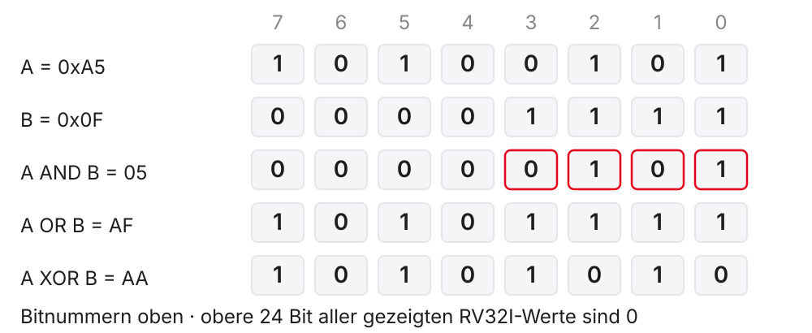
Maskieren, setzen, invertieren
Lehrannahme: t0 = 0x000000A5, t1 = 0x0000000F.
Eine Maske wählt einzelne Bitstellen aus.
Links schieben: Randbits gehen verloren
sll rd, rs1, rs2: links schieben, rechts Nullen einfügen.
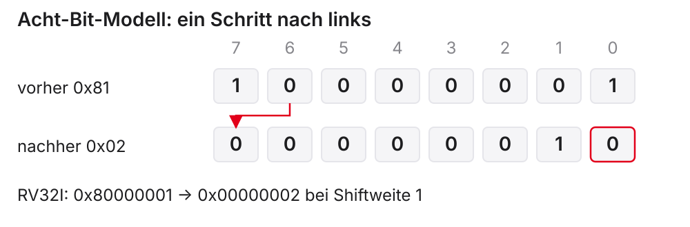
Rechts schieben: null oder Vorzeichen?
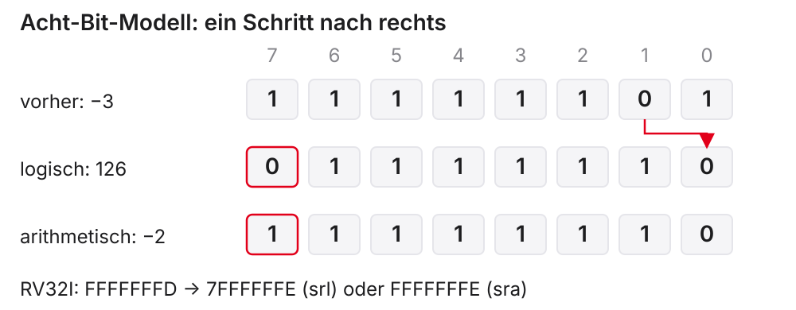
srl füllt mit null; sra kopiert das höchste Quellbit.
Registershift: nur fünf Bits zählen
\[k=\operatorname{unsigned}(R[rs2])\bmod 32\]
Inhalt von rs2 |
effektive Weite \(k\) | sll für Quelle 5 |
|---|---|---|
| 1 | 1 | 10 |
| 31 | 31 | 0x80000000 |
| 32 | 0 | 5 |
| 33 | 1 | 10 |
Kopieren und negieren mit x0
Lehrannahme: t0 = 5.
x0liefert die benötigte null.- Sonderfall:
0x80000000bleibt beim Negieren dasselbe Muster.
4. Konstanten direkt im Befehl
addi: eine Quelle und eine Zahl
\[R[rd]_{\text{neu}}=(R[rs1]+\operatorname{sext}_{12\to32}(imm))\bmod 2^{32}\]
Zwölf Bit: ein vorzeichenbehafteter Bereich
\[-2^{11}\le imm\le 2^{11}-1 \quad\Rightarrow\quad -2048\ldots2047\]
| Zwölf-Bit-Muster | signed Wert |
|---|---|
0x7FF = 0111 1111 1111 |
2047 |
0x800 = 1000 0000 0000 |
−2048 |
0xFFF = 1111 1111 1111 |
−1 |
addi t0, x0, 2048 ist keine gültige native Instruktion.
Vorzeichen auf 32 Bit erweitern
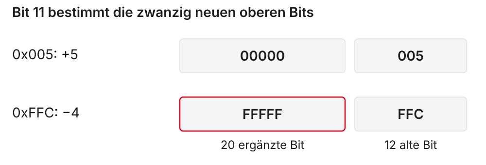
addi t0, t1, -4 addiert 0xFFFFFFFC, nicht 0x00000FFC.
Auch logische Immediates sind signed
Lehrannahme: t0 = 0x000000A5.
Die Maske -1 wird auf 32 Einsen erweitert.
Shift-Immediate: eine besondere Aufteilung
| Registerweite | direkte Weite | Füllung |
|---|---|---|
sll |
slli |
links schieben, rechts null |
srl |
srli |
rechts schieben, links null |
sra |
srai |
rechts schieben, links Vorzeichen |
shamt: direkt codierte Weite, in RV32I nur 0 bis 31slli t0, t1, 32ist unzulässig; Registerweite 32 ergibt Weite 0.
Subtrahieren mit addi: die Grenze prüfen
\[X-K=X+(-K)\]
- RV32I benötigt dafür keinen nativen
subi-Befehl. - Gegenbeispiel: Subtraktion von \(-2048\) benötigt \(+2048\).
Pseudoinstruktionen: Hilfe des Assemblers
| Quelltext | Bedeutung | gültige native Entwicklung |
|---|---|---|
li t0, 42 |
Konstante laden | addi t0, x0, 42 |
mv t1, t0 |
kopieren | addi t1, t0, 0 |
likann bei großen Werten mehrere Instruktionen erzeugen.- Der Prozessor führt die erzeugten nativen Befehle aus.
Warum li 2048 mehr als einen Schritt braucht
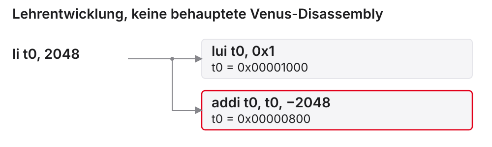
Zwischenhalt: Ergebnis und Zulässigkeit
Lehrannahme: t0 = 0xFFFFFFFD (\(-3\)).
srai t1, t0, 1: Ergebnis?xori t2, t0, -1: Ergebnis?addi t3, x0, 2048: gültig?sll t4, t0, t5mitt5 = 32: Ergebnis?
5. Vom Befehl zum 32-Bit-Wort
Text, Werkzeug und Maschinenwort
- Assemblertext:
add t0, t1, t2 - Assemblerwerkzeug: löst Namen auf und codiert Felder
- Maschinenwort:
0x007302B3 - Prozessor: decodiert dieses Wort und führt die Wirkung aus
R-Format: sechs feste Felder
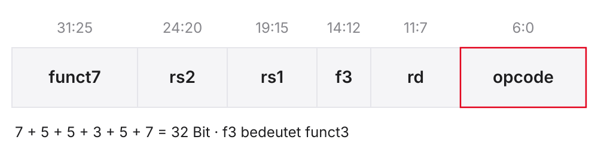
rd, rs1, rs2: je 5 Bit für eine Registernummer von 0 bis 31.
Opcode allein reicht nicht
| Befehl | opcode | funct3 | funct7 |
|---|---|---|---|
add |
0110011 |
000 |
0000000 |
sub |
0110011 |
000 |
0100000 |
and |
0110011 |
111 |
0000000 |
or |
0110011 |
110 |
0000000 |
xor |
0110011 |
100 |
0000000 |
Erst die Kombination bezeichnet die Operation eindeutig.
Codieren: erst die Felder bestimmen
Beispiel: add x9, x20, x21.
| Feld | Wert | Binärfeld |
|---|---|---|
rd |
9 | 01001 |
rs1 |
20 | 10100 |
rs2 |
21 | 10101 |
funct3 |
0 | 000 |
funct7 |
0 | 0000000 |
opcode |
0x33 |
0110011 |
Codieren: verbinden und in Hex lesen
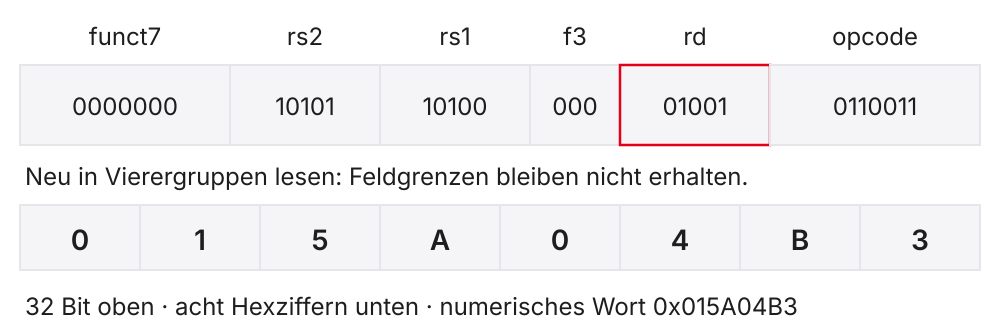
add x9, x20, x21 → 0x015A04B3.
Decodieren: den Weg umkehren
Wort: 0x007302B3.
- Familie und Operation aus
opcode,funct3,funct7bestimmen. - Registerfelder als Nummern lesen.
- Ergebnis:
add x5, x6, x7=add t0, t1, t2.
Wortdarstellung und Bytefolge
Instruktionswort: 0x015A04B3.
| Adresse, Lehrannahme | Byte in Little Endian |
|---|---|
0x1000 |
0xB3 |
0x1001 |
0x04 |
0x1002 |
0x5A |
0x1003 |
0x01 |
Die Hexschreibweise des numerischen Worts wird nicht umgedreht.
I-Format: Immediate statt zweiter Quelle
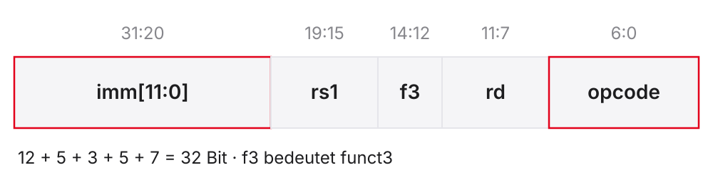
Für addi: opcode = 0010011, funct3 = 000.
Ein negatives addi vollständig codieren
addi t0, t1, -4 = addi x5, x6, -4.
Maschinenwort: 0xFFC30293.
6. Vorhersagen und mit Venus vergleichen
Der erste verlässliche Vergleich
- Kurs-Venus: thaumicmekanism.github.io/venus
- Text eingeben und erfolgreich assemblieren
- Tatsächlich erzeugte native Instruktionen ansehen
- Anfangswerte notieren, Step ausführen, Zustände vergleichen
- Nach Änderungen neu assemblieren und zurücksetzen
Direktive, Label, Kommentar oder Befehl?
Codeausschnitt: Der Umgebungsabschluss fehlt hier noch.
ecall: die Venus-Dienste haben eigene Rollen
| Zweck | a0 |
a1 |
|---|---|---|
| ganze Zahl ausgeben | Dienst 1 | Druckwert |
| Programm beenden | Dienst 10 | hier unbenutzt |
ecallfordert einen Dienst der Umgebung an.- Normale Funktion:
a0kann Ergebnis sein. - Venus-Dienst:
a0ist hier die Dienstnummer.
Ein vollständiges Druckprogramm
Erwartung: Konsolenzahl 42, anschließend Ende.
Laborauftrag: Messkorrektur berechnen
\[Y=(A-B)+4C\]
t0–t2: \(A=12\), \(B=19\), \(C=5\)t3: Differenz;t4: vierfaches C;t5: Ergebnis- Vor der Ausgabe: Werte am Label
Ergebnis_pruefenprüfen - Venus: Ergebnis nach
a1, Dienst 1, danach Dienst 10
Im Übungsblatt: Programm verfolgen, codieren, Fehler finden, in Venus prüfen.
Fehlersuche: zuerst die Abweichung finden
| Beobachtung | zuerst prüfen |
|---|---|
| Übersetzung scheitert | t0 mit Ziffer 0, Operandentyp, Immediate-Grenze |
| falsches Registerergebnis | alte Quellen, Reihenfolge bei sub |
| Ausgabe statt Ergebniszahl | Dienst in a0, Wert in a1 |
| unerwartete zusätzliche Schritte | li-Expansion und native Liste |
Erwarteten und beobachteten Zustand desselben Schritts vergleichen.
Selbstkontrolle vor dem Quiz
- Warum ändert ein neuer Inhalt von
x20nicht das Wort0x015A04B3? - Warum invertiert
xorimit-1alle 32 Bits? - Warum ist
a0 = 10am Programmende kein Rechenergebnis? - Wie viele Byte belegen zwei native Instruktionen ohne C?
Weiterlernen und gezielt nachschlagen
- Einheit 3: Speicherzugriffe und Bedingungen
- Einheit 4: Funktionen und vollständige Aufrufkonvention
- Harris/Harris: Digital Design and Computer Architecture — RISC-V Edition
- Patterson/Hennessy: Computer Organization and Design — RISC-V Edition
- Venus-Dienste: Dokumentation